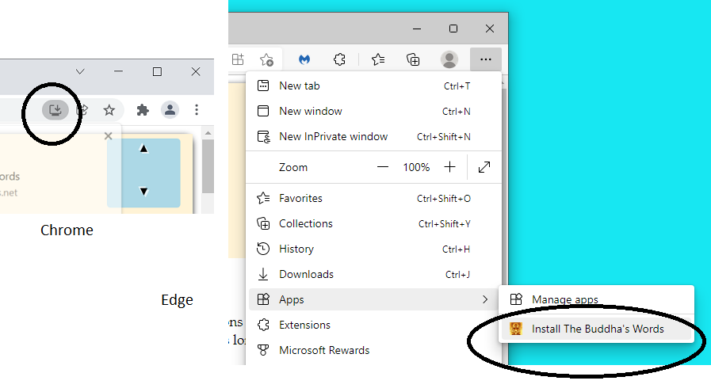

Help
The Buddha's Words works well on a tablet or PC but is a bit difficult to read on smaller smart phone-sized screens. It has been tested on a range of browsers but has been developed and maintained on Google Chrome. The Buddha's Words relies on javascript to load pages, toggle Pali on and off and to do the Pali lookup etc.
The site works online as a normal web site and, if it is installed as a Progressive Web App (PWA) (see below), it is available offline with full functionality. The Buddha's Words PWA makes it simple to install, ensures the content is available offline and automatically updates the content when you are connected to the internet. The technology which makes installation and updating easy is only found in recent versions of browsers such as Chrome, Microsoft Edge, Safari and Firefox for Android (but not the desktop version). If you'd like to access the site content while offline, it needs to either be installed as a PWA from one of the supported browsers or to download the archived site, extract it and copy the site to your device.
1: To Install as a Progressive Web App (PWA).
Open https://thebuddhaswords.net in either Chrome or Microsoft Edge (other browsers we've tested don't have the support yet for PWA's). If you haven't already installed it, an installation icon should be showing in the top right hand corner of the Chrome browser.

Click on the installation icon to install the PWA to your device.
In Microsoft Edge, click the three dots at the top right hand corner of the browser and choose Apps | Install the Buddha's Words
Allow about ten minutes for it to fully install. (The whole site takes up around 130Mb of disk space)
Installing onto a Mac OSX Device.
Install the PWA from either Chrome or Microsoft Edge.
Installing onto an iPad or iPhone.
Install the PWA from Safari.
2: Installing From an Archived Version of the Site
You may be in a situation where internet connectivity is poor or, you can't get the PWA to work or you just want a working version of The Buddha's Words on your USB drive, computer or Android device. In such circumstances you'll need to download the latest version, extract the files from the either the Winzip or 7-zip archive then copy it to the computer or device.
The latest version can be downloaded: from this link. (If you need to type the location for some reason, here's a shortened version of the URL: https://tinyurl.com/2p8kcfrr
We've provided both zip and 7-zip archives with identical content. The 7-zip archiving is more efficient but not as easy to use (or as ubiquitous) as zip archives.
Installing onto a Windows Computer or USB drive.
If you're installing it to a Windows computer create a folder somewhere and extract the files into it. For this example, we'll assume you are creating a folder called bw on your C drive. i.e. C:\bw. Once the files are extracted into the folder, navigate to the home folder (in this example C:\bw\home\) and click on index.html to open it in your default browser (depending upon your Windows Explorer settings, you may not see the .html ... that's OK). The browser will need to support running java - for example Chrome and Firefox work well. Once the Home Page of the Buddha's Words opens, it might be a good idea to bookmark it so that you can come back to it without going through the previous steps.
The process is the same if you're installaing onto a USB drive however bookmarking will probably not be consistent because the drive letters of USB drives can change.
3. Installing onto an Android Device.
It's probably easiest to get the files extracted and working on a PC as above and to then connect your Android device to the PC via USB and copy the whole folder to the main storage of the device. (In this way you maximise your chances of it working correctly although in many instances, copying the files to the SD card can also work).
However you want to do it, you will need to end up with the files in a folder somewhere on your Android device in exactly the same structure as they were extracted. To check that you have all the files, as a guidleine there should be 4,677 files in 24 folders taking up 131Mb of disk space. If your count is a lot lower you'll need to repeat the process). We'll asssume in this example that the complete set of files are in the main storage of your Android device in a folder called bw.
You won't be able to open the Home Page just by navigating to it with the browser that came with your Android device. You will need to find out the file path and somehow get that path into a suitable browser. In the last year or so, security has been increased and this prevents most browsers from accessing files stored locally. Fortunately the free, Open Source Kiwi Web Browser is more forgiving in this respect and is our recommended way to run The Buddha's Words on an Android device.
The latest version of the Kiwi Browser to be tested is 107.0.5304.74 and can be downloaded from the Google Play Store.
Alternatively, if a future version of Kiwi Browser introduces tighter security for files on a local disk, a copy of a tested version in APK format can be found here.
Use the built-in File Manager to navigate to where you've copied The Buddha's Words. For example, if you've copied the files to your main storage into a folder called bw you'd navigate to bw\home\index.html and long press it to open it in your default browser. Once it's open, create a bookmark to it so you don't have to repeat the process.
Alternatively, using the file manager that came with your Android, navigate to where you have copied \home\index.htm and note the file path. If you copied it to your main storage into a folder called bw the path may be file:///storage/emulated/0/bw/home/index.html however there is a lot of inconsistency between android device manufacturers. :-/
4. Installing onto a Mac OSX Device.
- Download the .zip file from Google Drive.(by default it will go to your Downloads folder). If the file hasn't 'unzipped' by itself, double-click the .zip file and you will get a folder containing The Buddha's Words.
- Move the folder to somewhere more useful, maybe Documents or Desktop. (Optionally) rename the folder BuddhasWords or something meaningful to you.
- Open the folder and scroll down to the home folder and open it.
- Double click on index.html. The Buddha's Words will open in Safari or your default browser.
- You may like to bookmark it to make it easier to find later (Command+D)
5. Installing onto an iPad or iPhone.
You will need:
- The .zip archive of The Buddha's Words from Google Drive..
- Documents by Readdle (free from the App Store - click on this link)
Once you have the .zip file of The Buddha's Words downloaded to your iPad/iPhone:
Mac only using AirDrop.
- On the Mac - ensure Wifi and Bluetooth are turned on.
- Enable AirDrop receiving on your iPad/iPhone. (See https://support.apple.com/en-au/HT204144)
- Select the .zip of Buddhas words in a finder window and click the 'share' button at the top.
- Choose AirDrop
- When you see your iOS device's name, click on it and then accept the transfer on your device.
- Choose to transfer it to Documents.
6. Using The Buddha's Words on your IOS device.
- Open Documents on your iOS device.
- First time only: The .zip should be directly in the main Documents folder.
- Tap on the .zip and it will expand to make a folder with the same name as the zip file. (You can delete the .zip file at this point).
- Tap to open the Buddhas Words folder, scroll down to the home folder and open it
- Tap index.html
If it doesn't work ...
If ...
you've followed the instructions above and
you're using one of the recommended browsers
... and it still doesn't work, please email the Buddha's Words team detailing the problem you're having and we'll do our best to help. Please see the Contact Page for our contact details.
If it does work ...
Please let us know if you come up with anything that you found works well. Please also send us your suggestions. Thanks!